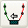
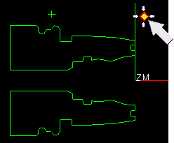

Create an Avoidance operation inside the TURN_WORKPIECE node.
On the Insert toolbar click Create Geometry .
In the Create Geometry dialog box, from the Type list, select turning.
In the Geometry Subtype group, click AVOIDANCE .
In the Location group, from the Geometry list, select TURN_WORKPIECE.
Click OK.
In the Avoidance dialog box, in the Motion to Start Point (ST) group, from the Motion Type list, select Direct.
Click Inferred Point .
Select the point.

Define a Start Point at the indicated location that uses a direct motion to the point.
In the Motion to Start of Engage group, from the Motion Type list, select Radial→Axial.
In the Motion to Return Point / Clearance (RT) group, from the Motion Type list, select Axial→Radial.
From the Point Option list, select Same as Start.
Click OK.